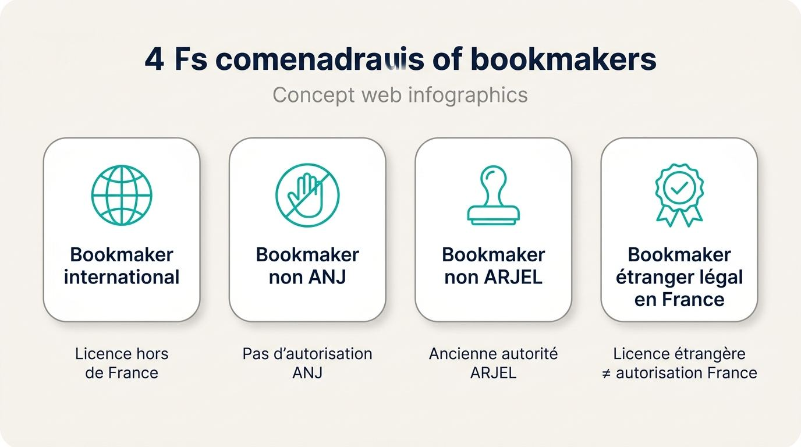
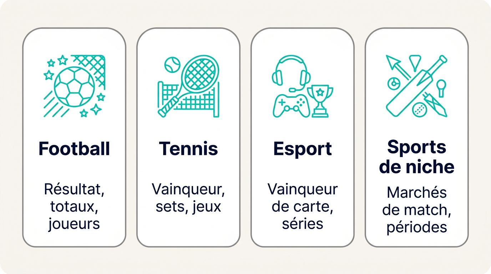
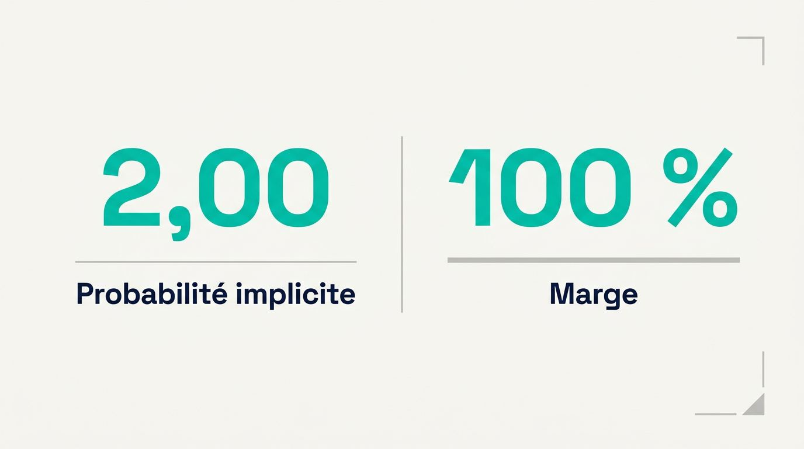
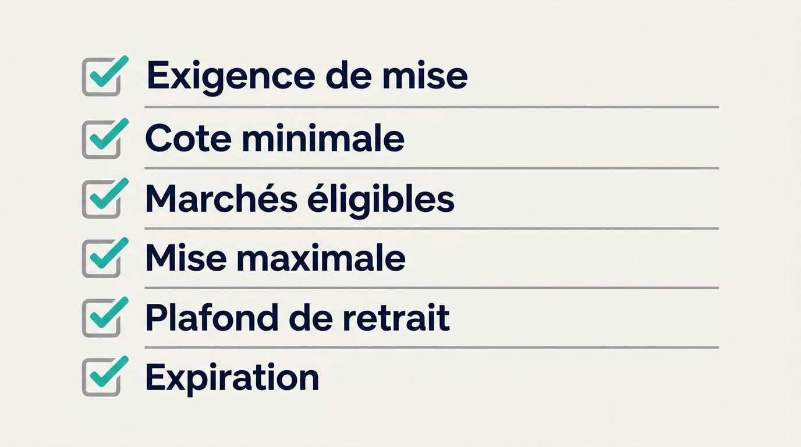
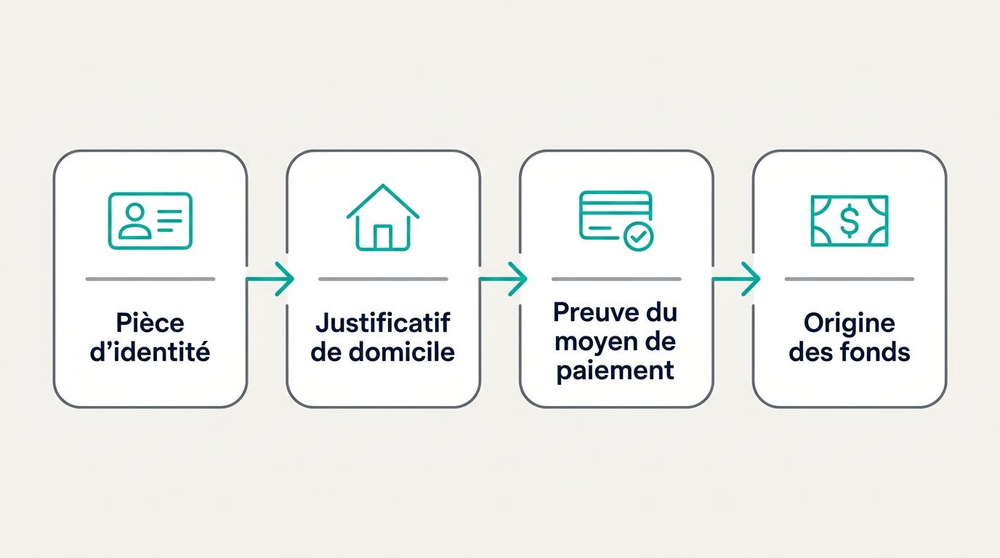

Une cote attractive ou un bonus élevé perd vite son intérêt si le retrait impose des conditions imprévues. Choisissez un opérateur dont les marchés, les limites de mise et les règles de paiement correspondent à votre façon réelle de parier.
Cette sélection est régulièrement revue et mise à jour.
Comparatif des offres disponibles
Les offres sont chargées automatiquement depuis la source du comparatif.
Comprendre les sites internationaux et les sites agréés par l’ANJ
Un site de paris international exerce sous une licence située hors de France, alors qu’un site agréé par l’Autorité nationale des jeux, l’ANJ, est autorisé dans le cadre français. Cette différence de statut aide à interpréter l’offre d’un bookmaker non ANJ, les modalités d’accès au compte et les voies de recours disponibles pour les parieurs français. Elle permet aussi de comprendre ce que recouvre aujourd’hui l’expression bookmaker hors ARJEL.

Les paris sportifs internationaux peuvent présenter des conditions d’utilisation distinctes. Vous devez donc distinguer la licence détenue par l’opérateur de son droit de proposer ses services sur le territoire français.
Ce qu’est un opérateur étranger
Un bookmaker étranger est un opérateur de paris titulaire d’une licence hors de France, dont le site peut accepter des résidents français selon ses propres critères d’éligibilité. Cette acceptation dépend de ses règles d’inscription, de pays, de géolocalisation et de paiement.
Les expressions employées sur les sites de paris peuvent recouvrir des réalités proches, sans modifier le cadre de régulation des jeux d’argent applicable.
- Bookmaker international : opérateur qui propose ses services dans plusieurs pays sous une ou plusieurs licences de jeu.
- Bookmaker non ANJ ou bookmaker hors ANJ : opérateur qui ne dispose pas de l’autorisation délivrée par l’ANJ pour commercialiser des paris dans le cadre français.
- Bookmaker non ARJEL ou bookmaker hors ARJEL : appellation encore fréquente qui renvoie à l’ancienne autorité française, l’ARJEL, remplacée par l’ANJ.
- Bookmaker étranger légal en France : une licence délivrée à l’étranger ne vaut pas, à elle seule, autorisation de commercialiser des paris en France.
Cette terminologie permet de comparer les bookmakers hors du cadre ANJ selon ce qu’ils acceptent concrètement pour votre profil.
Comment l’offre de paris peut différer
Les sites de paris étrangers peuvent se différencier par leur couverture d’événements, leurs marchés de paris sportifs, leurs promotions et leurs politiques de mise. Ces écarts ont une utilité seulement si le site ouvre effectivement ses marchés aux résidents en France.
Un opérateur hors ANJ peut proposer une sélection plus large sur certaines compétitions, tandis qu’un autre limitera ses marchés selon le pays du titulaire du compte. Les conditions de compte comptent autant que l’inventaire affiché publiquement.
Parmi les différences à vérifier, vous pouvez examiner :
- la couverture de ligues secondaires, de compétitions internationales et de sports moins suivis ;
- les marchés joueurs, les lignes de handicap et les combinés sur une seule rencontre ;
- la disponibilité des paris en direct, avec des marchés encore ouverts pendant le match ;
- les structures de bonus, leurs règles d’éligibilité et leur durée ;
- les limites de mise, les plafonds de gain et les conditions susceptibles d’encadrer l’activité du compte.
Les marchés proposés aux résidents français, et non le nombre total de paris annoncé, déterminent l’intérêt concret du compte.
Vérifier l’accès direct depuis la France
L’acceptation directe des résidents français doit être confirmée avant l’inscription et avant le premier dépôt. Un bookmaker hors ARJEL acceptant les Français doit permettre de créer, vérifier et utiliser un compte avec vos informations réelles.
Suivez cette vérification avant de transmettre un document ou une méthode de paiement :
- Vérifiez que le formulaire accepte une adresse résidentielle française, un code postal français et un numéro de téléphone français.
- Consultez la liste des pays exclus dans les conditions générales et dans la rubrique consacrée à l’ouverture de compte.
- Confirmez que les cartes ou autres méthodes de paiement utilisées en France sont admises au dépôt et au retrait.
- Lisez les règles de géolocalisation et les conditions d’accès depuis la France avant de créditer le compte.
- Vérifiez les documents acceptés pour la validation d’une adresse française.
Un réseau privé virtuel, souvent désigné par l’abréviation VPN, ne constitue pas une solution fiable pour accéder aux bookmakers étrangers depuis la France. Une incohérence entre la géolocalisation, l’adresse déclarée, l’appareil utilisé et le moyen de paiement peut entraîner une vérification supplémentaire. La détection d’un VPN peut aussi compliquer l’accès au compte ou le traitement d’un retrait.
Contrôles d’acceptation directe : vérifiez l’adresse française, le numéro de téléphone, les restrictions de pays, les règles de géolocalisation et la compatibilité des dépôts comme des retraits avant tout dépôt.
Paris sportifs hors ARJEL : sports, marchés et paris en direct qui apportent une vraie valeur
La valeur d’un site de paris repose sur la profondeur utile des marchés concernant les sports que vous suivez, en particulier le football, le tennis et l’esport. Un catalogue très long ne suffit pas si les marchés recherchés restent absents, fermés ou peu détaillés.

Les week-ends de football et les paris en direct concentrent une partie importante des usages en France. Vous gagnerez donc à observer la précision des marchés pré-match puis leur disponibilité pendant l’événement.
Des marchés plus complets sur le football, le tennis et l’esport
Une couverture pré-match devient utile lorsqu’elle donne accès à des marchés exploitables au-delà du résultat final. Sur une affiche de Ligue 1 ou de Ligue des champions, la différence se mesure par la présence de lignes sur les joueurs, les totaux, les handicaps et les combinaisons liées à la même rencontre.
Le handicap asiatique attribue un avantage ou un désavantage chiffré à une équipe. Certaines lignes fractionnées peuvent répartir la mise entre deux handicaps et conduire à un remboursement partiel selon le résultat. Ce format mérite une lecture attentive de la ligne sélectionnée avant validation.
Le Bet Builder, également appelé combiné sur un même match, permet d’assembler plusieurs sélections liées à une seule rencontre, par exemple un total de buts et une action d’un joueur. L’opérateur fixe ses règles de compatibilité, ses cotes et les éventuelles exclusions. Un combiné proposé sur une affiche ne garantit pas sa disponibilité sur tous les marchés ou toutes les compétitions.
En tennis, l’intérêt d’un site dépend moins du volume de tournois affichés que de la variété disponible sur les rencontres ATP, WTA et Roland-Garros. Les marchés sur le vainqueur, les sets, les jeux et certains indicateurs de match permettent une comparaison plus précise. Vous devez toutefois vérifier les limites et les règles de règlement associées à chaque pari.
Les paris esports et les paris sur des sports de niche peuvent compléter l’offre, notamment lors de compétitions internationales ou pendant les périodes plus calmes du calendrier footballistique. Leur présence, leurs limites et leur accès depuis la France varient selon les opérateurs.
| Catégorie | Marchés utiles à comparer | Point de contrôle |
|---|---|---|
| Football | Résultat, totaux, marchés joueurs, handicap asiatique, Bet Builder | Profondeur sur la Ligue 1 et la Ligue des champions |
| Tennis | Vainqueur, sets, jeux, handicaps, totaux | Couverture des tableaux ATP, WTA et de Roland-Garros |
| Esport | Vainqueur de carte, séries, handicaps, totaux | Disponibilité effective pour les comptes français |
| Sports de niche | Marchés de match, périodes, performances ciblées | Limites de mise et continuité de l’offre |
Les grands week-ends de football, les phases finales de Ligue des champions, Roland-Garros et les compétitions internationales offrent des moments adaptés pour contrôler cette profondeur, car les marchés y sont généralement les plus comparables.
Ce qui rend les paris en direct réellement utilisables
Pour les paris sportifs hors ARJEL, une expérience en direct utilisable repose sur la profondeur des marchés, la fréquence d’actualisation des cotes et la clarté des outils de gestion pendant l’événement. Sur le football et le tennis, observez si le site accepte effectivement les paris lorsque le rythme du match s’accélère.
Une suspension brève peut survenir lors d’un but, d’un penalty, d’une balle de break ou d’une action décisive. Elle sert à réajuster les cotes. Des suspensions répétées ou prolongées réduisent toutefois votre capacité à placer un pari au prix affiché.
Le cash out permet de demander une clôture anticipée d’un pari pour un montant proposé par le site. Cette option reste facultative, peut disparaître à tout moment et ne couvre pas nécessairement tous les marchés. Un Bet Builder en direct peut également être disponible sur certaines affiches, avec des restrictions propres à la combinaison choisie.
Avant de parier, consultez les règles de règlement des paris en direct. Elles précisent notamment le traitement d’un événement interrompu, d’une sélection annulée ou d’une erreur manifeste de cote. Une longue liste de matchs en direct est utile lorsque les marchés restent ouverts et que les règles de règlement sont faciles à localiser.
Les signaux à observer sont les suivants :
- la fréquence à laquelle les cotes sont mises à jour sur un même marché ;
- la possibilité de valider une sélection sans refus répétés ;
- la durée des suspensions lors des séquences décisives ;
- la présence éventuelle du cash out et ses conditions d’affichage ;
- la lisibilité des règles de règlement avant la prise de pari ;
- la cohérence entre les marchés ouverts sur le site de paris et ceux réellement disponibles dans votre pays.
Cotes, marges et limites de mise chez un bookmaker hors ARJEL
Des cotes plus élevées sont utilisables lorsque la marge de l’opérateur est plus faible sur un marché comparable et que les limites de mise permettent d’utiliser ce prix. La marge correspond à l’écart de prix intégré par les bookmakers, ce qui explique pourquoi deux sites affichent des cotes différentes pour le même pari.

L’analyse des cotes d’un bookmaker étranger doit donc associer le prix, le marché, l’instant de relevé et la mise réellement acceptée. Les bonus relèvent d’une évaluation distincte.
Quand de meilleures cotes font la différence
La comparaison des cotes n’est utile que si vous examinez le même événement, le même marché et le même instant de relevé. Comparer une victoire de Ligue 1 avec un handicap proposé ailleurs, ou relever les prix à plusieurs heures d’écart, ne permet pas d’évaluer les marges des bookmakers.
La marge se calcule à partir de l’ensemble des probabilités implicites des issues d’un marché. Dans le format de cotes décimales utilisé en France, une cote de 2,00 correspond à un retour brut potentiel de deux fois la mise si le pari est gagnant. Lorsque la somme des probabilités implicites dépasse 100 %, l’écart représente la marge intégrée par le site.
Les formats fractionnaires existent sur certains sites internationaux, mais les cotes décimales facilitent la comparaison pour les parieurs français. Conservez le même format lors de vos relevés afin d’éviter toute erreur de lecture.
Lors de l’actualisation d’un comparatif, les relevés les plus utiles portent sur des marchés liquides et familiers, comme un résultat de Ligue 1, un vainqueur de match de tennis, ou un total en direct. Les périodes de Ligue des champions, Roland-Garros et les grandes compétitions internationales permettent également de comparer des marchés identiques sur plusieurs sites.
Une différence de prix a un effet direct sur le retour potentiel d’une même mise. Son intérêt dépend toutefois de la marge globale du marché et de la possibilité de placer la mise souhaitée. Les conditions d’un bonus de bienvenue doivent être évaluées séparément, car une hausse ponctuelle de cote ou un crédit promotionnel peut imposer des restrictions distinctes.
| Catégorie de marché | Fourchette de marge typique | Relevé comparable recommandé |
|---|---|---|
| Résultat de football à trois issues | Marge souvent modérée sur les grandes affiches | Même match, mêmes issues, même heure |
| Tennis à deux issues | Marge variable selon le tournoi et le tour | Même vainqueur de match ou même handicap |
| Marchés joueurs | Marge souvent plus élevée que sur le résultat principal | Même joueur, même seuil, même rencontre |
| Paris en direct | Marge et disponibilité évolutives | Même minute de jeu et même marché ouvert |
| Marchés spécialisés | Marge très variable selon la liquidité | Même ligne et même règle de règlement |
Les écarts observés doivent rester documentés pari par pari. Une affirmation générale sur les « meilleures cotes » ne permet pas de savoir si vous obtenez un avantage sur les marchés que vous utilisez.
Limites, restrictions et contrôles de compte
Les plafonds de mise et de gain publiés par les opérateurs n’empêchent pas des restrictions ultérieures, des contrôles renforcés ou des décisions prévues dans leurs conditions. Une limite affichée constitue un point de départ pour votre comparaison, sans garantir une capacité de mise durablement élevée.
Cherchez les mises maximales par pari, les plafonds de paiement et les clauses qui permettent à l’opérateur de modifier les limites. Certaines restrictions restent visibles dans le coupon de pari. D’autres peuvent apparaître après une activité gagnante régulière, l’utilisation de lignes recherchées, des mises élevées ou un volume cumulé important.
Les contrôles renforcés peuvent aussi intervenir, notamment avec des demandes de justificatifs sur la provenance des fonds ou une évaluation de la capacité financière du client.
Avant l’inscription, vérifiez au minimum :
- les mises maximales indiquées par sport, marché ou événement ;
- les plafonds de gains et les limites de paiement ;
- les clauses relatives aux restrictions de compte ;
- les motifs de vérification KYC, AML et de provenance des fonds ;
- les conditions qui encadrent la modification des limites par l’opérateur.
Les promesses destinées aux gros parieurs ne remplacent pas des conditions lisibles avant dépôt.
Bonus et valeur réellement retirable chez un bookmaker hors ARJEL
La valeur d’un bonus de bookmaker étranger dépend de la part qui peut raisonnablement devenir retirable, et non du montant promotionnel annoncé. Un bonus de bienvenue élevé peut perdre une grande partie de son intérêt si les conditions limitent les marchés, les mises ou les gains accessibles.

Comparez chaque offre selon vos habitudes de paris, vos cotes habituelles et le délai dans lequel vous pouvez remplir les règles prévues.
Les principaux types de bonus de paris sportifs
Chaque type de bonus crée une valeur différente selon le pari que vous prévoyez de placer. Les parieurs gagnent à vérifier si le format correspond aux marchés qu’ils utilisent plutôt que de comparer les montants affichés.
Les offres les plus courantes comprennent :
- Dépôt abondé : l’opérateur ajoute un montant promotionnel lié à votre premier dépôt, sous réserve de conditions de mise.
- Pari gratuit : aussi appelé free bet, il s’agit d’un crédit promotionnel utilisable sur un pari éligible selon les règles du site.
- Hausse de cote : aussi appelée boost de cotes, elle augmente ponctuellement le prix proposé sur une sélection définie.
- Remboursement partiel : le cashback restitue une partie d’une perte ou d’une mise selon les modalités de l’offre.
- Promotion de rechargement : elle accorde un avantage lors d’un dépôt ultérieur, souvent avec des conditions distinctes du bonus de bienvenue.
Un bonus de bookmaker étranger peut convenir à un parieur qui utilise déjà les marchés éligibles et les cotes demandées. Dans le cas contraire, l’offre peut vous pousser vers des paris qui ne correspondent pas à votre méthode habituelle.
Les conditions qui réduisent la valeur d’un bonus
Les exigences de mise, la cote minimale, les marchés exclus, les limites de mise et les plafonds de retrait peuvent réduire fortement la valeur d’un bonus. Vous devez lire ces conditions avant d’activer l’offre, car elles déterminent la conversion éventuelle du crédit promotionnel en fonds retirable.
L’exigence de mise impose un volume de paris à placer avant le retrait du bonus ou des gains associés. Une condition de mise de bonus peut s’appliquer au dépôt, au bonus, ou aux deux montants. Elle peut aussi exclure certains paris, notamment les cotes trop faibles, les marchés spécialisés ou des sélections combinées.
Vérifiez ensuite la cote minimale exigée, les sports éligibles, les marchés autorisés, la mise maximale par pari et la date d’expiration. Un plafond de retrait peut limiter le montant récupérable, même après un pari gagnant. Les clauses d’abus de bonus peuvent restreindre l’éligibilité ou le retrait lorsque les conditions publiées sont enfreintes, par exemple en cas de comptes liés ou d’utilisation contraire aux règles de l’offre.
Un bonus important peut exiger un volume de mise élevé à une cote minimale précise, exclure vos marchés habituels et limiter le montant retirable. Le montant réellement accessible peut alors être bien inférieur au crédit annoncé.
Avant d’accepter une offre, comparez les éléments suivants :
- Exigence de mise : volume de paris requis avant tout retrait des fonds concernés.
- Cote minimale : prix que chaque sélection doit atteindre pour contribuer aux conditions.
- Marchés éligibles : sports, types de paris et combinés admis dans l’offre.
- Mise maximale : montant autorisé par pari pendant l’utilisation du bonus.
- Plafond de retrait : limite appliquée aux gains issus du crédit promotionnel.
- Expiration : délai accordé pour utiliser le bonus et remplir ses conditions.
- Clause d’abus de bonus : situations dans lesquelles l’opérateur peut annuler l’offre ou refuser des gains promotionnels.
Paiements, KYC et retraits chez un bookmaker hors ARJEL depuis la France
Après la valeur des cotes et des bonus, l’usage d’un compte dépend surtout de la cohérence entre le dépôt, la vérification et l’accès aux gains. Un paiement de bookmaker étranger est pratique pour un résident français lorsque les méthodes de paiement admises, les documents demandés et le retrait de bookmaker étranger correspondent à sa situation.

Les préférences entre carte, virement, portefeuille électronique et cryptomonnaies diffèrent selon les utilisateurs. Les frais, les règles de conversion et les contrôles applicables à chaque méthode doivent être lus avant de créditer un compte.
Moyens de paiement et coûts réels
Le moyen le plus adapté dépend de sa disponibilité depuis la France, de son délai de traitement, de ses frais et de l’éventuelle conversion de devise. Un dépôt par carte bancaire peut convenir si le site accepte les cartes émises en France et si la banque autorise l’opération, tandis qu’un virement bancaire peut imposer un traitement distinct à l’entrée comme à la sortie.
SEPA, ou espace unique de paiement en euros, désigne le cadre des virements en euros entre établissements participants. Les portefeuilles électroniques bookmaker, souvent appelés e-wallets, permettent de passer par un intermédiaire de paiement, sous réserve de leur disponibilité dans le pays du compte et de leurs règles de retrait.
Un bookmaker crypto accepte des paiements en cryptomonnaies, comme Bitcoin, selon ses conditions. Les paris sportifs en cryptomonnaie impliquent parfois l’utilisation d’un portefeuille crypto, aussi appelé crypto wallet, le choix du réseau de transfert, des frais de réseau et une exposition à la variation du cours. Cette méthode peut également déclencher des vérifications complémentaires prévues par l’opérateur.
Contrôlez les frais de dépôt, de retrait et de conversion avant de choisir une méthode. Un montant crédité dans une devise différente de l’euro peut générer un coût à plusieurs étapes.
| Catégorie | Points à contrôler depuis la France | Coûts ou contraintes possibles |
|---|---|---|
| Carte bancaire | Acceptation des cartes françaises, limite bancaire, vérification du titulaire | Refus bancaire, frais de conversion, exigence de retrait vers la même carte |
| Virement bancaire et SEPA | Coordonnées bancaires, devise, référence de paiement | Délais bancaires, frais éventuels, conversion |
| Portefeuille électronique | Disponibilité du portefeuille et correspondance avec le titulaire du compte | Frais propres au portefeuille, vérification supplémentaire |
| Cryptomonnaies | Réseau, adresse du portefeuille, actif accepté, règles du site | Frais réseau, volatilité, erreur d’adresse ou de réseau |
Vérifications KYC pour les résidents français
Le KYC constitue une étape normale de vérification d’identité qui peut intervenir avant un dépôt, un retrait ou une activité plus importante sur le compte. Pour un KYC de bookmaker, confirmez avant l’inscription que les justificatifs de domicile français sont admis et que les règles de protection des données sont accessibles.
L’ampleur de la vérification d’identité du bookmaker dépend des conditions publiées et de l’activité du compte. Des retraits élevés ou cumulés peuvent déclencher des contrôles AML liés à la lutte contre le blanchiment d’argent, un contrôle PEP concernant les personnes politiquement exposées, ainsi qu’une demande sur la provenance des fonds. L’usage d’un portefeuille électronique ou de cryptomonnaies peut aussi entraîner des vérifications additionnelles.
Préparez les documents généralement demandés :
- Une pièce d’identité en cours de validité, telle qu’une carte nationale d’identité, un passeport ou un titre de séjour.
- Un justificatif de domicile récent à votre nom, accepté pour une adresse située en France.
- Une preuve du moyen de paiement, par exemple une carte partiellement masquée ou un relevé lié au portefeuille utilisé.
- Des documents sur l’origine des fonds si les conditions du site prévoient un contrôle renforcé.
Délais de retrait et signaux de friction
La fiabilité d’un retrait se juge avant le dépôt à partir du délai d’attente publié, des règles de paiement, des documents demandés et des plafonds de versement. Le délai d’attente d’un retrait, parfois désigné par withdrawal pending period, correspond à la période pendant laquelle l’opérateur examine ou prépare la demande avant son envoi vers le moyen de paiement.
Cette étape peut couvrir une vérification de paiement, ou payout verification, et le contrôle de la cohérence entre le dépôt initial et la destination du retrait. Certaines conditions imposent ainsi un retour prioritaire des fonds vers la carte ou le portefeuille ayant servi au dépôt. Une demande de document après un gain peut être normale ; tenez compte des règles floues sur la durée du traitement ou les motifs de blocage.
Examinez aussi les plafonds par transaction, les frais, les conversions de devise et les frais de compte inactif, parfois nommés dormant-account charges. Une option permettant d’annuler un retrait en attente peut vous conduire à reverser les fonds sur le solde de paris. Les conditions relatives aux rétrofacturations, ou chargebacks, méritent également une lecture attentive.
Employez le terme « retrait rapide bookmaker » lorsque les délais publiés et des observations documentées le confirment pour la méthode concernée. Les opérateurs les plus lisibles publient avant le premier dépôt leurs délais de paiement, leurs frais, leurs règles de conversion et leurs frais d’inactivité.
Avant de financer un site de paris, vérifiez les éléments suivants :
- le délai d’attente annoncé avant l’envoi du retrait ;
- le moyen de paiement utilisable à la sortie et sa compatibilité avec le dépôt ;
- les plafonds de retrait par opération, période ou compte ;
- les frais, la devise appliquée et les règles de conversion ;
- les documents exigibles et les conditions de compte inactif.
Règles de retrait à confirmer : consultez les délais de traitement, la hiérarchie des moyens de paiement, les plafonds de versement, les frais, les conversions, les contrôles documentaires et les frais de compte inactif avant tout dépôt.
Comment évaluer la fiabilité d’un bookmaker international
Les règles de retrait révèlent une partie du fonctionnement d’un opérateur, mais une décision de dépôt exige aussi une identité vérifiable, une licence contrôlable et une voie de réclamation identifiable. La fiabilité d’un opérateur international repose sur des documents, des registres et des observations de service.
Pour un joueur français utilisant un opérateur licencié hors de France, le recours auprès du régulateur français ne constitue pas la voie principale de traitement d’un litige. Vous devez donc identifier le recours en cas de litige avec le bookmaker, les informations sur les fonds des joueurs et les éléments opérationnels accessibles avant l’ouverture du compte.
Vérifier la licence et l’identité de l’opérateur
Une mention de licence n’a de valeur que si vous pouvez vérifier de manière indépendante l’autorité compétente, la société exploitante, l’adresse enregistrée et la référence inscrite au registre. La licence de l’opérateur doit être affichée dans les conditions du site ou dans ses informations légales, avec un lien ou une référence permettant de retrouver l’enregistrement.
Curaçao eGaming et la Malta Gaming Authority, ou MGA, constituent des autorités de licence de jeu internationales dont l’encadrement et les modalités de recours diffèrent. Leur présence atteste seulement l’existence d’une licence de jeu ; vérifiez séparément le paiement des gains, la protection des données, la qualité du service et la manière dont l’opérateur décrit le traitement des fonds des joueurs, notamment l’existence éventuelle de comptes séparés ou d’un dispositif de règlement des différends.
Effectuez les contrôles suivants avant de retenir un opérateur :
- Identifiez l’autorité qui a délivré la licence et le pays auquel elle se rattache.
- Relevez le nom légal de la société, son adresse enregistrée et son numéro de licence.
- Recherchez ces informations dans le registre de l’autorité de licence lorsque celui-ci est accessible.
- Lisez la politique relative aux fonds des joueurs et aux conditions applicables aux soldes.
- Localisez la procédure de réclamation, l’éventuel médiateur ou organisme de règlement des différends et le contact du régulateur compétent.
Les preuves opérationnelles à vérifier avant un dépôt
Pour évaluer la fiabilité d’un site international, fondez-vous sur des observations documentées. Une analyse sérieuse doit préciser ses critères de test pour le dépôt, l’achèvement du KYC, le premier retrait et la réactivité du service client, ainsi que les qualifications de l’auteur ou de l’équipe qui évalue les paris.
Pendant les premiers jours d’utilisation, observez la cohérence entre les délais annoncés et les étapes réellement affichées, la clarté des demandes documentaires et la qualité des réponses du service client. Une réponse utile traite la question posée, indique la règle applicable et laisse une trace écrite. Une promesse promotionnelle du site ne constitue pas une observation vérifiée.
Les réclamations répétées sur un même type de blocage, lorsqu’elles sont documentées et contextualisées, peuvent signaler une difficulté opérationnelle. L’authentification à deux facteurs, parfois désignée par two-factor authentication, constitue un signal complémentaire de contrôle du compte, sans remplacer la vérification des paiements et des conditions.
Les éléments à documenter sont les suivants :
- le déroulement réel de la validation du dépôt et de la vérification d’identité ;
- la clarté du statut et du traitement du premier retrait ;
- la capacité du support à répondre précisément aux conditions publiées ;
- la présence d’une authentification à deux facteurs et de procédures de connexion lisibles ;
- les motifs récurrents de réclamation et la réponse apportée par l’opérateur.
Outils de jeu responsable et gestion de bankroll
Les contrôles de jeu responsable et une gestion de bankroll définie empêchent que les paris fréquents ou les promotions fixent à votre place le montant dépensé. Les outils proposés par le site encadrent le compte, tandis que votre budget et votre taille de mise relèvent de décisions personnelles.
Ces mesures concernent directement les parieurs confrontés à une hausse de fréquence des jeux. En cas de difficulté liée à l’addiction aux jeux, les ressources françaises telles que Joueurs Info Service permettent d’obtenir une aide confidentielle.
Les contrôles à vérifier avant d’ouvrir un compte
Les limites de dépôt, les limites de perte, les rappels de session et l’auto-exclusion doivent être vérifiés avant l’ouverture, car leur disponibilité et leur activation varient selon les opérateurs. Ces fonctions participent à la protection des joueurs lorsqu’elles sont accessibles, compréhensibles et applicables au compte français.
Les reality checks sont des rappels affichés sur le temps ou l’activité de jeu. L’auto-exclusion suspend volontairement l’accès au compte selon les règles du site. Vérifiez aussi si le site reste compatible avec un logiciel de blocage des jeux d’argent.
Contrôlez notamment :
- les limites de dépôt et les modalités de réduction ou d’augmentation de ces plafonds ;
- les limites de perte, parfois appelées loss limits, si elles sont proposées ;
- les rappels de session et les reality checks disponibles ;
- les règles, la durée et les effets de l’auto-exclusion ;
- la compatibilité avec les logiciels de blocage et les autres outils de jeu responsable.
Règles de bankroll pour les paris à forte variance
Les paris en direct, les séquences de football et les activités guidées par un bonus exigent des limites budgétaires définies avant la première mise. Une gestion de bankroll cohérente vous aide à séparer le budget de paris de vos dépenses courantes.
Appliquez des règles simples :
- Fixez un budget de paris déterminé avant le dépôt et considérez-le comme une dépense plafonnée.
- Utilisez une taille de mise cohérente d’un pari à l’autre, adaptée au budget fixé.
- Définissez un seuil de perte à partir duquel vous cessez de parier pour la période choisie.
- N’augmentez pas un dépôt uniquement pour atteindre le montant demandé par un bonus.
- Ne cherchez pas à récupérer une perte par une mise plus élevée ou par une multiplication des paris.
Les points essentiels avant de choisir un bookmaker hors ARJEL
Le choix final doit réunir l’accès direct depuis la France, une valeur de paris utilisable, des conditions transparentes et des signaux de confiance vérifiables.
- Pour savoir comment choisir un bookmaker étranger fiable, donnez priorité à l’inscription avec une adresse française réelle et à la compatibilité du dépôt comme du retrait.
- Comparez la profondeur des marchés, les marges sur des cotes relevées au même instant et les limites de mise réellement applicables à votre usage.
- Lisez les conditions du bonus, les exigences KYC et les règles de retrait avant de créditer le compte.
- Vérifiez la licence, l’identité de l’opérateur, les informations sur les fonds des joueurs, le recours disponible et les preuves de service documentées.
- Le meilleur bookmaker correspond à vos paris habituels, à votre moyen de paiement et au niveau de contrôle que vous souhaitez conserver sur votre budget.
Choisissez le meilleur bookmaker hors ARJEL adapté à vos paris
Retenez l’opérateur dont l’accès depuis la France, les marchés, le moyen de paiement et les conditions de retrait correspondent à votre usage réel. Comparez la sélection selon que vous souhaitez parier occasionnellement, suivre les marchés en direct, accéder à l’esport ou utiliser une méthode de paiement particulière. Consultez ensuite les conditions de l’option retenue avant toute inscription.
Questions fréquentes sur les bookmakers étrangers en France
Les réponses suivantes portent sur des situations pratiques qui peuvent affecter les paiements, le règlement des paris, le cash out et la gestion d’un compte sur les sites de paris accessibles depuis la France.
Peut-on retirer vers un moyen de paiement différent de celui utilisé pour le dépôt ?
Cela dépend des conditions de retrait de l’opérateur. Il peut imposer un retour initial vers le moyen de dépôt, puis autoriser un virement bancaire après vérification du paiement.
Pourquoi un bookmaker international peut-il annuler un pari déjà réglé ?
Les règles de règlement peuvent autoriser l’annulation en cas d’erreur manifeste de cote, de marché ou de donnée. Consultez les bet settlement rules et la procédure de réclamation applicable au pari concerné.
Le cash out garantit-il le montant affiché au moment de la validation ?
Non, le cash out est garanti seulement après acceptation confirmée par l’opérateur. Le montant peut changer ou être refusé si les cotes évoluent ou si le marché est suspendu.
Que vérifier si un retrait en cryptomonnaie n’est pas arrivé ?
Vérifiez l’adresse du portefeuille, le réseau choisi, l’identifiant de transaction et les confirmations. Contrôlez aussi le statut KYC et les délais publiés par le bookmaker crypto avant de contacter le support.
Que faire si une carte bancaire française est refusée lors d’un dépôt ?
Confirmez l’acceptation des cartes françaises par le site, puis vérifiez les restrictions de votre banque et les données saisies. Consultez uniquement les méthodes de paiement officiellement proposées, y compris les filtrages de paiement français.